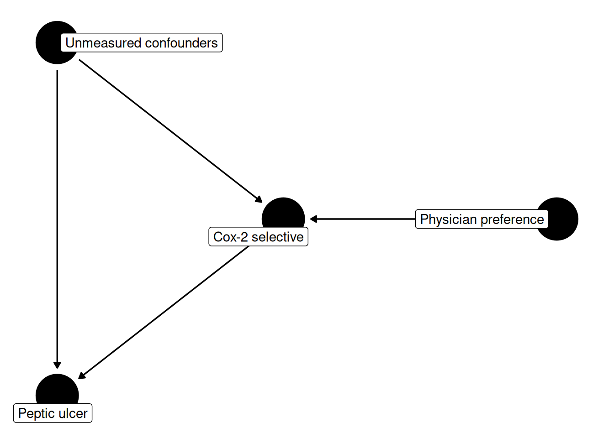

Chapter 13 Instrumental variables
Parts II and III differed in almost every mechanical detail, setting standardization against weighting, point outcomes against time to event, and baseline treatment against sustained strategies, and yet they agreed on a single premise. Every estimator assumed that within levels of the covariates we happened to record, treated and untreated patients were exchangeable. Part IV asks what remains available when that premise is precisely the thing we doubt. This chapter looks for variation in treatment we can argue is as good as randomly assigned even though the treatment itself plainly is not. Chapter 14 takes the opposite tack, and asks how badly exchangeability would have to fail before a finding reversed.
13.1 When exchangeability fails
The bargain we have been striking all along is that if we measure enough covariates, treatment is as good as randomized within their levels, and it is a bargain we can never audit. Chapter 8’s balance diagnostics confirm that the covariates we recorded are balanced; they are silent about the ones we did not. When a clinician chooses a Cox-2 selective agent because a patient looks frail in a way no billing code captures, no amount of adjustment for the codes we do have will repair the comparison.
An instrumental variable offers a different bargain, and one whose untestable content is differently placed rather than weaker. We look for a variable \(Z\) that shifts treatment for reasons that have nothing to do with prognosis, and we use only the part of the variation in treatment that \(Z\) explains. Three conditions define such a variable, stated here as Hernán and Robins (2006) stated them for epidemiologists.
- Relevance. \(Z\) is associated with treatment \(A\). This is the one condition the data can speak to.
- Exclusion restriction. \(Z\) affects the outcome \(Y\) only through \(A\). There is no arrow from \(Z\) to \(Y\) that bypasses treatment.
- Instrument exchangeability. Nothing points into both \(Z\) and \(Y\) — no backdoor path connects the instrument to the outcome, either unconditionally or after conditioning on measured covariates \(L\). The instrument is itself unconfounded.
Conditions 2 and 3 are assumptions in the same unverifiable sense that conditional exchangeability was; we have moved the untestable content rather than eliminated it. What we gain is that the assumptions now concern a variable we may know something about institutionally, rather than the completeness of a covariate list.
The three conditions together do not identify an effect; they bound one, with bounds given by Manski (1990) and sharpened by Balke and Pearl (1997), which are often wide and rarely reported. For a point estimate a fourth assumption is needed, and there are two conventional choices. Under effect homogeneity — the effect of \(A\) on \(Y\) is constant across patients, or at least uncorrelated with how strongly \(Z\) moves their treatment — the instrument identifies the average treatment effect. Under monotonicity — no patient’s treatment is pushed in the opposite direction to everyone else’s by the instrument — it identifies the average effect among those patients whose treatment the instrument actually moved. That second quantity is the local average treatment effect, and it is the one we will ultimately estimate.
library(ggdag)
dag_iv <- dagify(
pud ~ cox2 + u,
cox2 ~ pref + u,
exposure = "cox2",
outcome = "pud",
latent = "u",
labels = c(pref = "Physician preference", cox2 = "Cox-2 selective",
pud = "Peptic ulcer", u = "Unmeasured confounders")
)
ggdag(dag_iv, text = FALSE, use_labels = "label") + theme_dag()
The diagram sets out the whole method in four nodes. The unmeasured \(U\)
points at both cox2 and pud, so the backdoor path that ruined the crude
comparison is still open and no adjustment set closes it. But pref has
exactly one arrow out of it, into cox2, and nothing pointing in from
\(U\). The only way pref and pud can be associated is along
pref -> cox2 -> pud, so any association we observe between them must
be the drug’s effect, scaled down by how much of cox2 the instrument
controls. Rescaling by that amount is what an IV estimator does. Two of
the conditions appear in the diagram only as missing arrows: the absent
pref -> pud arrow is the exclusion restriction, and the absent
u -> pref arrow is instrument exchangeability.
13.2 Provider preference as an instrument
Physicians differ in prescribing habits for reasons that outlive any individual patient, including training, detailing, formulary, and temperament. Two patients with identical records who walk into different offices may receive different drugs, and the difference is attributable to the office rather than to the patient. That is the intuition behind provider preference as an instrument: we take a physician’s prescribing tendency, estimated from her other patients, as an assigned nudge toward one drug or the other.
The leave-one-out construction matters. If a physician’s preference were computed from all her visits including the index one, a patient’s own treatment would contribute \(1/n\) of her physician’s score, and the first stage would be mechanically positive even for a physician with no habit at all. Excluding the index visit removes that arithmetic artifact, so whatever association survives reflects the habit and not the patient.
The original implementation of this idea (Brookhart, Wang, Solomon, and Schneeweiss 2006) used a lag-1 variant, in which the instrument was what the physician prescribed to her previous patient. The leave-one-out mean we use here is the same instrument in spirit, since both are proxies for a prescribing preference the patient did not choose, although it draws on all of the physician’s other patients rather than one, and so uses more of the information each physician’s panel contains.
ns_iv <- ns |>
group_by(phycode) |>
mutate(n_visits = n(),
pref = (sum(cox2_init) - cox2_init) / (n_visits - 1)) |>
ungroup() |>
filter(n_visits >= 2)The filter is not a formality. Of 1518 physicians, only
690 contribute two or more visits; the rest have no other
patient from whom a preference could be computed, since n_visits - 1 is
zero and the score undefined. The cohort falls from
2882 visits to 2054, carrying
156 Cox-2 initiators and 207 ulcer
cases. This is the first cost of the method, paid before any estimation,
since an IV analysis buys its differently placed assumptions with data.
The distribution is heavily skewed. Cox-2 initiation is uncommon and most
physicians in a panel of two to ten visits prescribed none, so pref is
exactly zero for 1766 of the 2054
visits; only 288 patients saw a physician who prescribed a
Cox-2 drug to anyone else we observe.
Relevance we can check directly.
##
## Call:
## lm(formula = cox2_init ~ pref, data = ns_iv)
##
## Residuals:
## Min 1Q Median 3Q Max
## -0.30239 -0.05734 -0.05734 -0.05734 0.94266
##
## Coefficients:
## Estimate Std. Error t value Pr(>|t|)
## (Intercept) 0.057338 0.006052 9.474 <2e-16 ***
## pref 0.245047 0.025866 9.474 <2e-16 ***
## ---
## Signif. codes: 0 '***' 0.001 '**' 0.01 '*' 0.05 '.' 0.1 ' ' 1
##
## Residual standard error: 0.2594 on 2052 degrees of freedom
## Multiple R-squared: 0.04191, Adjusted R-squared: 0.04144
## F-statistic: 89.75 on 1 and 2052 DF, p-value: < 2.2e-16Moving from a physician who prescribed a Cox-2 agent to none of her
other patients to one who prescribed it to all of them raises this
patient’s probability of receiving one by
24.5 percentage points
(SE 2.6), with an \(F\) statistic of
90 — well past the conventional
rule-of-thumb threshold of 10. Adding ns_covs to the first stage barely
touches it: the partial \(F\) for pref is
80. Physician habit therefore does predict
prescribing, which is the least we should demand of an instrument.
The second and third conditions cannot be checked, but one of their implications can be inspected. If the instrument is assigned for reasons unrelated to the patient, patient characteristics should be more balanced across levels of the instrument than across levels of treatment.
source("R/table1.R")
ns_iv <- ns_iv |> mutate(pref_any = as.integer(pref > 0))
by_both <- function(f, vars) {
bind_rows(
`Treatment: nonselective / Cox-2` = f(ns_iv, vars, "cox2_init"),
`Instrument: pref = 0 / pref > 0` = f(ns_iv, vars, "pref_any"),
.id = "contrast"
) |>
rename(group_0 = `0`, group_1 = `1`)
}
by_both(table1_continuous, "age") |> knitr::kable()| contrast | variable | group_0 | group_1 |
|---|---|---|---|
| Treatment: nonselective / Cox-2 | age | 46.8 (16.5) | 52.0 (15.5) |
| Instrument: pref = 0 / pref > 0 | age | 46.9 (16.5) | 48.7 (16.3) |
| contrast | variable | level | group_0 | group_1 |
|---|---|---|---|---|
| Treatment: nonselective / Cox-2 | arthritis | No | 1299 (68.4%) | 81 (51.9%) |
| Treatment: nonselective / Cox-2 | arthritis | Yes | 599 (31.6%) | 75 (48.1%) |
| Treatment: nonselective / Cox-2 | year | 2005 | 301 (15.9%) | 40 (25.6%) |
| Treatment: nonselective / Cox-2 | year | 2006 | 412 (21.7%) | 39 (25.0%) |
| Treatment: nonselective / Cox-2 | year | 2007 | 399 (21.0%) | 28 (17.9%) |
| Treatment: nonselective / Cox-2 | year | 2008 | 358 (18.9%) | 29 (18.6%) |
| Treatment: nonselective / Cox-2 | year | 2009 | 428 (22.6%) | 20 (12.8%) |
| Instrument: pref = 0 / pref > 0 | arthritis | No | 1211 (68.6%) | 169 (58.7%) |
| Instrument: pref = 0 / pref > 0 | arthritis | Yes | 555 (31.4%) | 119 (41.3%) |
| Instrument: pref = 0 / pref > 0 | year | 2005 | 262 (14.8%) | 79 (27.4%) |
| Instrument: pref = 0 / pref > 0 | year | 2006 | 385 (21.8%) | 66 (22.9%) |
| Instrument: pref = 0 / pref > 0 | year | 2007 | 378 (21.4%) | 49 (17.0%) |
| Instrument: pref = 0 / pref > 0 | year | 2008 | 337 (19.1%) | 50 (17.4%) |
| Instrument: pref = 0 / pref > 0 | year | 2009 | 404 (22.9%) | 44 (15.3%) |
The comparison is partly reassuring and partly not, and the mixed result is more instructive than a clean one would have been. On the clinical covariates the instrument behaves as it should: age differs by 0.33 standardized units across treatment but only 0.11 across the instrument, and arthritis by 0.34 against 0.21. Across all 28 model terms the mean absolute standardized difference is 0.113 for treatment and 0.102 for the instrument.
Calendar year is another matter, and the second table shows why. Cox-2
prescribing fell steadily over this period, from
11.7% of initiations in 2005
to 4.5% in 2009, and each
NAMCS physician contributes visits from a single survey year. A
high-preference physician is therefore disproportionately a 2005
physician, and the standardized difference for the 2005 indicator is
0.31 across the instrument against
0.24 across treatment — worse, not
better. Secular trends in ulcer diagnosis and management would then reach
the outcome without passing through this patient’s drug, violating the
exclusion restriction. Year is measured, so the repair is available: we
condition on it, and read the IV conditions as holding within levels of
ns_covs rather than unconditionally. The diagnostic did not validate
the instrument, although it did locate a specific threat and indicate
what to adjust for.
13.3 The Wald and two-stage estimators
With a binary instrument the estimator is arithmetic. Suppose the instrument shifts the treated fraction by \(\Delta_A\) and the outcome risk by \(\Delta_Y\). If the only route from instrument to outcome is through treatment, then \(\Delta_Y = \beta \, \Delta_A\), where \(\beta\) is the effect of treatment on the outcome. Solving gives the Wald ratio,
\[\hat\beta = \frac{E[Y \mid Z = 1] - E[Y \mid Z = 0]}{E[A \mid Z = 1] - E[A \mid Z = 0]},\]
a difference in outcomes divided by a difference in treatments. We
dichotomize the instrument at the only cut point the data offer. Because
pref is exactly zero for six visits in seven, splitting at the median
with ntile(pref, 2) would divide the tied-at-zero mass arbitrarily and
produce two groups that barely differ in treatment; pref > 0 is the
substantive contrast.
wald_tab <- ns_iv |>
group_by(pref_any) |>
summarise(n = n(), treated = mean(cox2_init), risk = mean(pud),
.groups = "drop")
wald_tab |> knitr::kable(digits = 4)| pref_any | n | treated | risk |
|---|---|---|---|
| 0 | 1766 | 0.0606 | 0.0985 |
| 1 | 288 | 0.1701 | 0.1146 |
## [1] 0.1465595The instrument moves treatment by 11.0 percentage points and the outcome by +1.6, so the ratio is +14.7 percentage points. The numerator and denominator are worth reading before the quotient: a +1.6-point difference in ulcer risk between groups of 1766 and 288 patients is well within sampling variability, and dividing a noisy small number by 0.11 multiplies the noise by nine.
The general form replaces the ratio with two regressions. Fit treatment on the instrument, take the fitted values, and regress the outcome on those — two-stage least squares, which reproduces the Wald ratio exactly with a single binary instrument and generalizes to continuous instruments and covariates.
iv_estimator <- function(data, instrument, treat, outcome, covs = NULL,
n_boot = 200, conf_level = 0.95, seed = NULL) {
if (!is.null(seed)) set.seed(seed)
tsls <- function(d) {
s1 <- lm(reformulate(c(instrument, covs), treat), data = d)
d$.that <- predict(s1)
coef(lm(reformulate(c(".that", covs), outcome), data = d))[".that"]
}
est <- tsls(data)
boot_est <- replicate(n_boot, tsls(slice_sample(data, prop = 1, replace = TRUE)))
alpha <- 1 - conf_level
tibble(
estimate = unname(est),
conf_low = quantile(boot_est, alpha / 2),
conf_high = quantile(boot_est, 1 - alpha / 2)
)
}Two choices in that code are deliberate. The first stage is lm() even
though cox2_init is binary, where every instinct from Chapter 8 says
logistic regression. Substituting fitted probabilities from a
nonlinear first stage is the error known as the forbidden regression:
two-stage least squares is consistent because the first stage is a
linear projection of treatment onto the instrument and covariates,
which needs no model to be correct, whereas a logistic first stage
delivers usable fitted values only if the logistic model itself is right.
The second is the bootstrap. Reading the standard error off the
second-stage lm() would treat .that as data rather than as an
estimate, understating uncertainty; resampling propagates both stages,
and the seed argument makes a particular set of resamples
reproducible.
source("R/iv_estimator.R")
iv_plain <- iv_estimator(ns_iv, "pref", "cox2_init", "pud", seed = 1301)
iv_adj <- iv_estimator(ns_iv, "pref", "cox2_init", "pud",
covs = ns_covs, seed = 1301)
bind_rows(unadjusted = iv_plain, adjusted = iv_adj, .id = "model") |>
knitr::kable(digits = 4)| model | estimate | conf_low | conf_high |
|---|---|---|---|
| unadjusted | -0.0497 | -0.2802 | 0.1532 |
| adjusted | -0.1471 | -0.4024 | 0.0569 |
Now the full comparison, with Part II’s estimates recomputed alongside.
source("R/standardize.R"); source("R/propensity.R"); source("R/iptw_estimator.R")
ps_model <- reformulate(ns_covs, "cox2_init")
crude <- ns |> group_by(cox2_init) |> summarise(r = mean(pud), .groups = "drop") |> pull(r)
std <- standardize(ns, reformulate(c("cox2_init", ns_covs), "pud"),
treat = "cox2_init", n_boot = 200, seed = 921)
ipw <- iptw_estimator(ns, ps_model, outcome = "pud", treat = "cox2_init")
matched <- ps_match(est_ps(ns, ps_model), treat = "cox2_init", caliper = 0.05)
mr <- tapply(matched$pud, matched$cox2_init, mean)
iv_wald <- iv_estimator(ns_iv, "pref_any", "cox2_init", "pud", seed = 1301)
get <- function(d, key, col) d[[col]][d[[1]] == key]
tibble(
estimator = c("Crude", "Standardization (Ch. 7)", "PS matching (Ch. 8)",
"IPTW (Ch. 9)", "IV: Wald, pref > 0",
"IV: 2SLS, continuous pref", "IV: 2SLS + covariates"),
estimand = c("none", "ATE", "ATT", "ATE", "LATE", "LATE", "LATE"),
n = c(nrow(ns), nrow(ns), nrow(matched), nrow(ns), rep(nrow(ns_iv), 3)),
rd_pp = 100 * c(crude[2] - crude[1], get(std, "rd", "estimate"),
mr[[2]] - mr[[1]], get(ipw, "cox2_init", "estimate"),
iv_wald$estimate, iv_plain$estimate, iv_adj$estimate),
lower = 100 * c(NA, get(std, "rd", "conf_low"), NA,
get(ipw, "cox2_init", "conf.low"),
iv_wald$conf_low, iv_plain$conf_low, iv_adj$conf_low),
upper = 100 * c(NA, get(std, "rd", "conf_high"), NA,
get(ipw, "cox2_init", "conf.high"),
iv_wald$conf_high, iv_plain$conf_high, iv_adj$conf_high)
) |> knitr::kable(digits = 1)| estimator | estimand | n | rd_pp | lower | upper |
|---|---|---|---|---|---|
| Crude | none | 2882 | 2.7 | NA | NA |
| Standardization (Ch. 7) | ATE | 2882 | -0.6 | -3.8 | 2.5 |
| PS matching (Ch. 8) | ATT | 478 | -4.2 | NA | NA |
| IPTW (Ch. 9) | ATE | 2882 | -0.3 | -4.2 | 3.6 |
| IV: Wald, pref > 0 | LATE | 2054 | 14.7 | -21.2 | 56.2 |
| IV: 2SLS, continuous pref | LATE | 2054 | -5.0 | -28.0 | 15.3 |
| IV: 2SLS + covariates | LATE | 2054 | -14.7 | -40.2 | 5.7 |
The three IV rows should not be read as three answers; they are one non-answer reported three ways. The continuous-instrument estimate is -5.0 percentage points, the covariate-adjusted version -14.7, and the binary Wald ratio +14.7 — a change of sign across two codings of the same instrument. Their intervals span roughly 43 percentage points against 7.9 for IPTW on the same question, and they include values that are arithmetically impossible: the ulcer risk among nonselective initiators here is 9.9%, so a risk difference of -28 points cannot occur. An interval that contains impossible values is not informative about the effect, whereas Part II’s estimates, whatever their residual confounding, at least sit on the scale of the quantity they estimate.
13.4 Interpreting the LATE
Suppose the instrument were flawless and the sample large. What would we have estimated? Take the binary Wald row first, where the answer is cleanest. Under monotonicity, patients divide into three groups. Always-takers receive the Cox-2 drug regardless of which physician they see; never-takers receive the nonselective agent regardless; and compliers receive whichever drug their physician’s habit favors. The instrument carries no information about the first two groups, because their treatment does not respond to it. The local average treatment effect is the average effect among compliers alone.
The first stage measures how large that group is. Moving from a zero-preference to a positive-preference physician shifts the treated fraction by 11.0 points, so roughly one patient in 9 is a complier — about 225 of the 2054 in the cohort, among whom we would expect on the order of 22 ulcer cases. That number, not 2054, is the effective size of the Wald analysis, and it accounts for the intervals above better than any other single quantity.
The continuous-pref rows, which carry the headline estimates, need one
further step of care, because with a many-valued instrument there is no
single complier group. A shift in preference from 0 to 0.25 moves one set
of patients and a shift from 0.5 to 0.75 moves another, and 2SLS under a
linear model returns a weighted average of these per-increment local
effects across the instrument’s support, weighted by how much treatment
each increment shifts (Angrist and Imbens 1995). The complier arithmetic
above is exact for the binary row and an illustration of the idea for the
others; no single describable subgroup sits behind that weighted average.
Compliers are a subgroup we cannot enumerate, since no patient is labeled as one, and their clinical meaning depends on the instrument. Here they are the patients whose prescription could genuinely have gone either way. The arthritic patient with a prior bleed, for whom a Cox-2 agent is clearly indicated, is an always-taker, and the young patient with no GI history who would receive ibuprofen from any physician is a never-taker; the complier is the intermediate patient whose treatment tracked her physician’s habit. Whether the average effect in that group is what a guideline committee wants is worth asking explicitly, and the answer is often no. The LATE is a third estimand, distinct from the ATE of Chapter 3 and the ATT of Chapter 8, and defined by the instrument we happened to find.
Two caveats bound what this chapter has shown. The weak-instrument
literature warns that when the first stage is barely predictive, 2SLS is
biased toward the confounded estimate and its intervals undercover; the
\(F\) statistic of 90 clears the usual threshold, so
that is not our leading problem, although the threshold assumes
independent observations, and pref varies at the physician level with
only 690 physicians contributing. iv_estimator() as written
resamples visits rather than physicians, so every interval in this
chapter is too narrow by an amount we have not measured, and clustering
at the physician level would widen all of them. Our leading problem is
nonetheless simpler, and not repairable by a
better estimator: the reduced-form association between instrument and
outcome is -0.012
(SE 0.030), indistinguishable from
zero, and dividing a null numerator by a small denominator yields a wide
interval around nothing.
The provider-preference instrument in these data is strong enough to be worth constructing and transparent enough to audit, since the year imbalance we found is itself a finding about the instrument, but the analysis it yields is far too imprecise to settle the question. Although its non-contradiction of the null is mildly informative as one line in a sensitivity table beside Part II’s estimates, because it rests on different assumptions, it would be indefensible as a headline result with the point estimate quoted and the interval omitted.
13.5 Exercises
- Rebuild the instrument requiring
n_visits >= 3instead of 2. Report the resulting cohort size, the first-stage \(F\), and the IV estimate with its interval. The score is measured from more visits and so is less noisy, but fewer patients remain. Which effect dominates here, and how would you preregister the threshold? - Compare
iv_estimator()run withcovs = ns_covsagainst the unadjusted fit, and explain why covariates must appear in both stages rather than only the second. Then removeyearfromns_covsand rerun. Given the imbalance documented above, how much of the difference between the adjusted and unadjusted estimates is calendar time? - Suppose physicians who favor Cox-2 agents also practice in
better-resourced settings, so their patients receive closer follow-up
and more attentive management of GI symptoms. Draw the DAG. Which of
the three IV conditions fails, in which direction would it bias the
estimate, and would conditioning on
ns_covshelp? Propose one variable, measured or not, that would let you probe the assumption.